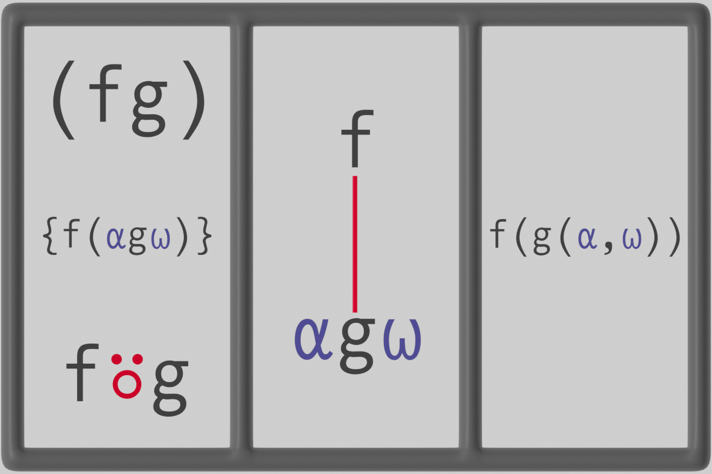
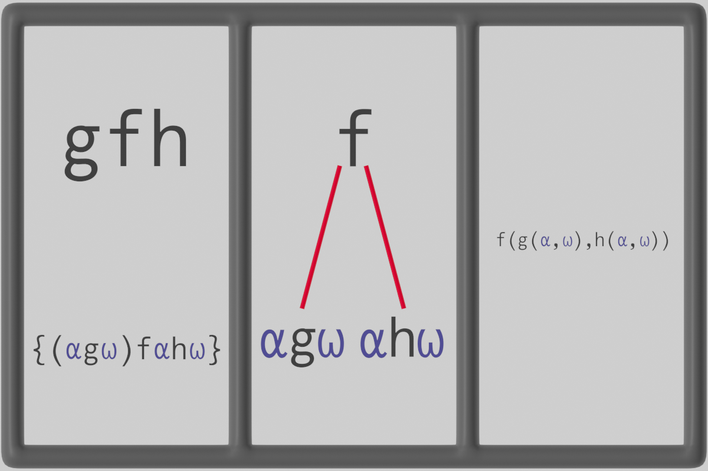
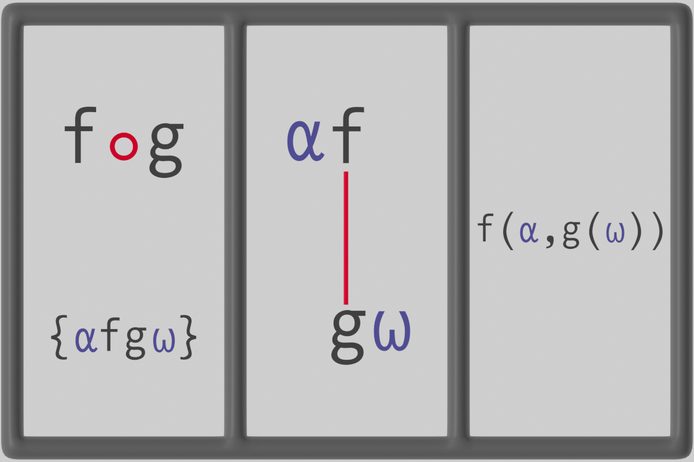
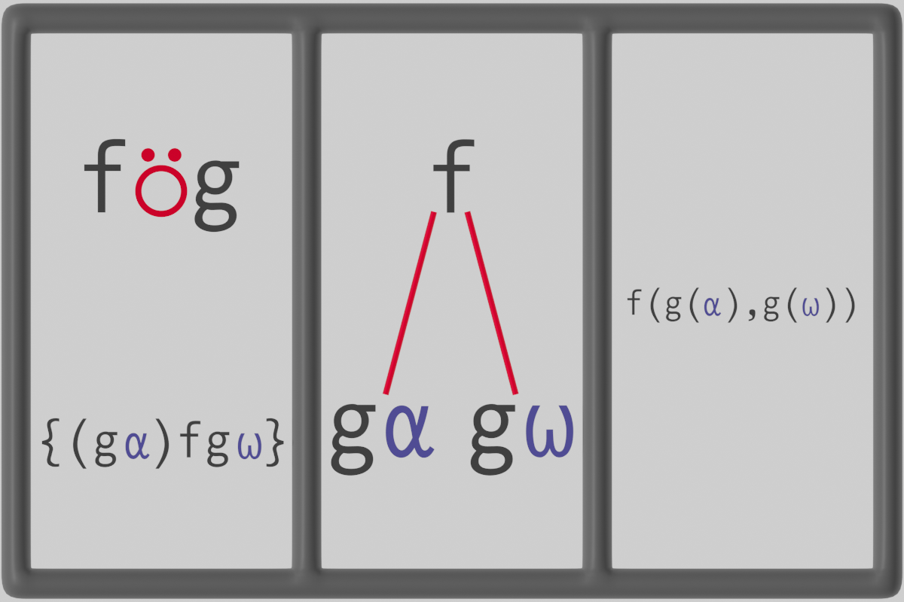

All aboard!
This part will cover
- Forks and Atops
- The tack functions
- Reduce function
Before starting this section, we briefly introduce the commonly used monadic replicate / operator, which applies its left function argument between every element of a vector. More on this in Chapter 4.
⍳10
1 2 3 4 5 6 7 8 9 10
+/⍳10
55
1+2+3+4+5+6+7+8+9+10
55
-/⍳10
¯5
1-2-3-4-5-6-7-8-9-10
¯5
∧/⍳20 ⍝ LCM of numbers from 1 to 20
2520
Some other important functions are the dyadic right and left identity/“tack” functions which return their right or left arguments. They "point" towards which argument they return.
"True"⊣"False"
True
"True"⊢"False"
False
At this point, all the functions we've defined have explicitly referred to the left ⍺ and right ⍵ arguments, for example in the following function range which takes the difference of the largest and smallest values of a vector
5 ⌈ 6
6
5 ⌈ 6 ⌈ 7 ⌈ 8
8
⍝ Maximum between whole vector
⌈/ 5 6 7 8
8
range ← {(⌈/⍵)-(⌊/⍵)}
range 80 49 56 60 100 99 23 19 24 4 50 7
50
or in the following function which takes the (weighted) average of a vector
+/ 1 10 100
111
⍝ Average
(+/ 1 10 100) ÷ 3
37
avg ← {(+/⍵)÷⍴⍵}
avg 1 10 100
37
⍝ Weighing the average by 1 1 1
(+/ 1 10 100 × 1 1 1) ÷ (+/ 1 1 1)
37
⍝ Weighing the average by 2 3 4
(+/ 1 10 100 × 2 3 4) ÷ (+/ 2 3 4)
48
weighted_avg ← {+/(⍺×⍵)÷(+/⍺)}
2 3 4 weighted_avg 1 10 100
48
in the "plus or minus" function and rounded (or floored) division function
plusminus ← {(⍺-⍵),⍺,⍺+⍵}
5.7 plusminus 0.5
5.05 5.7 6.35
round_div ← {⌊0.5+⍺÷⍵}
1 round_div 3
0
2 round_div 3
1
floor_div ← {⌊⍺÷⍵}
2 floor_div 3
0
4 floor_div 3
1
All of these functions can instead be expressed in terms of special combinations of functions, without referring to the arguments ⍺ and ⍵ at all! Just like magic, it takes some time to learn, but once you do it reveals a rich world of programming spells.
This style of programming is called tacit or "point-free" programming, borrowed from mathematics where it means taking data described using points to be more fundamental than the points themselves, avoiding the need to refer to points explicitly. In this case, taking functions to be more fundamental than their description in terms of explicit arguments. These point-free functions are called trains.
There are two fundamental types of trains which can be created by stringing functions together, more advanced trains will be covered in Chapter 6. The most basic train is the 2-train (fg), in operator form f⍤g, called an atop. The atop evaluates the function f on the result of g applied to the arguments of the train.
The following image shows three equivalent forms of the atop, the first being the APL syntax for the atop, the second being a tree-like representation of the atop where the evaluation happens from bottom to top, and the third is the atop in traditional mathematical notation.

Floored division can be conveniently expressed as an atop.
12÷5
2.4
⌊2.4
2
12(⌊÷)5
2
The second fundamental type of train is the 3-train (fgh), called a fork.

When acting on arguments ⍺ and ⍵, it applies g dyadically to ⍺f⍵ and ⍺h⍵.
The motivation for this specific definition is to match with mathematics, where it is possible to write f+g to get the sum of the values of the functions f and g.
Train trees
The ]Box user command controls how trains are displayed, it is beneficial to set -trains=tree to see a tree-like representation of trains.
f ← {...}
g ← {...}
f+g
f+g
]Box ON
Was OFF
]Box -trains=tree
Was -trains=box
f+g
┌─┼─┐
f + g
Forks here look like forks! The trees are read from bottom up, if there are only two functions at the end of a branch, the result of the right function is applied to the left function, if there are three functions, the middle function is applied to the result of the right and left functions. The values then go up the tree until it reaches the root, at which point it is returned.
Most of the above functions can be expressed as combinations of forks and atops, let's take a look at a few important cases.
The range function is the most straightforward example, it can be written as a single fork
range ← {(⌈/⍵)-(⌊/⍵)}
⍝ is equivalent to
range ← ⌈/-⌊/
range
┌─┼─┐
/ - /
┌─┘ ┌─┘
⌈ ⌊
The functions f and h here are the maximum ⌈/ and the minumum ⌊/, with g being the difference -. When only given a right argument, the above range function evaluates the maximum ⌈/⍵ and the minimum ⌊/⍵, then takes the difference - between them, as is intended.
An example of a fork over a fork is the plusminus function,
plusminus ← {(⍺-⍵),⍺,⍺+⍵}
⍝ is equivalent to
plusminus ← -,⊣,+
⍝ or with redundant parentheses -,(⊣,+)
plusminus
┌─┼───┐
- , ┌─┼─┐
⊣ , +
From the tree representation of plusminus, it is first seen that the function evaluates ⊣ and + to the arguments ⍺ and ⍵, then applies , between them. The result is then applied to the , above, with the result of -. The result is (⍺-⍵),((⍺⊣⍵),(⍺+⍵)) which is exactly (⍺-⍵),⍺,⍺+⍵.
The reason plusminus is interpreted as a fork over a fork is that APL function evaluation is always read from right to left. This extends to longer trains where, for example, (f g h i j k) is interpreted as (f (g h (i j k))), an atop over a fork over a fork.
The rounded division function can be written as an atop over an atop,
round_div ← {⌊0.5+⍺÷⍵}
⍝ is expected to be equivalent to
⌊((0.5+)÷)
SYNTAX ERROR: Missing right argument
⌊((0.5+)÷)
∧
What's going on here? The reason this doesn't work is that ⌊((0.5+)÷) is not purely composed of functions, it contains a value 0.5 and thus is not interpreted as a train. One way around this is to write ⌊({0.5+⍵}÷), which defeats the purpose of point-free programming. Instead, the bind ∘ function can be used to create a monadic function from a dyadic one. In this case, the dyadic function + is bound to the left argument 0.5 as 0.5∘+, which is now a monadic function equivalent to {0.5+⍵}.
round_div ← {⌊0.5+⍺÷⍵}
⍝ is equivalent to
round_div ← ⌊(0.5∘+÷)
round_div
┌┴─┐
⌊ ┌┴┐
∘ ÷
┌─┴─┐
0.5 +
Move the rest to Chapter 6
The rest of this section should be adapted for chapter 6
Some other important functions are the dyadic right and left identity/"tack" functions which return their right or left arguments.
'True'⊣'False'
True
'True'⊢'False'
False
Consider the following pairs of functions, implemented using dfns first, and trains second.
range_average ← {((⌈/⍵)-⌊/⍵),(+/⍵)÷≢⍵}
range_average 5.48 6 5.63 6.02 5.37
0.65 5.7
range_average ← (⌈/-⌊/),+/÷≢
range_average 5.48 6 5.63 6.02 5.37
0.65 5.7
plusminus ← {(⍺-⍵),⍺,⍺+⍵}
5.7 plusminus 0.65
5.05 5.7 6.35
plusminus ← -,⊣,+
5.7 plusminus 0.2
5.5 5.7 5.9
Notice that the arguments of the function were not referred to in the function trains, this style of programming is called tacit or "point-free" programming, borrowed from mathematics where it means taking data that can be described using points to be more fundamental than the points themselves, avoiding the need to refer to points explicitly. In this case, taking functions to be more fundamental than their description in terms of explicit arguments,
The most basic train is the 2-train (fg), in operator form f⍤g, called an atop. The atop evaluates the function f monadically on the result of g applied to the arguments of the train.
The following image is composed of three parts, the first being the APL syntax for the atop, the second being a tree-like representation of the atop where the evaluation happens from bottom to top, and the third is the atop in traditional mathematical notation.
Trains in RIDE
It is possible to make sense of trains by rendering them in various forms in the RIDE editor using the -trains option to the Box user command. For example, it is possible to render trains as trees using the following command.
]Box on -trains=tree
Floored division can be conveniently expressed as an atop.
12÷5
2.4
⌊2.4
2
12(⌊÷)5
2

More simply, the expression ⍺(f∘g)⍵ evaluates to ⍺fg⍵, and recalling that APL is right associative, is ⍺f(g⍵).
matrix ← 3 3 ⍴ (3|⍳9)
matrix
1 2 0
1 2 0
1 2 0
⍉ matrix ⍝ Transpose
1 1 1
2 2 2
0 0 0
⍝ Beside of matrix multiplication (+.×) and transpose (⍉)
matrix (+.×)∘⍉ matrix
5 5 5
5 5 5
5 5 5
matrix (+.×)⍉ matrix
5 5 5
5 5 5
5 5 5
1 2 (-/×)∘⊖ 3 1 ⍝ Cross product
¯5
⍝ A beside of an atop and a function
1 2 (-/×)⊖ 3 1
¯5
Notice that in the last statement, the atop -/× and function ⊖ were composed into an atop. Since the atop -/× is a functions in its own right, it can be used as part of larger trains.
The Over ⍥ operator, f⍥g, applies f to the value of g applied to each of its arguments.

The decibel conversion from the start of this chapter can be easily written in this form.
dB_to_ratio ← {10*⍵÷10}
ratio_to_dB ← {10×10⍟⍵}
⍝Over of an atop and a function
60 (ratio_to_dB÷)⍥dB_to_ratio 30
30
ratio_to_dB ((dB_to_ratio 60) ÷ dB_to_ratio 30)
13.01029996
reciprocal_sum ← {÷(÷⍺)+÷⍵}
1 reciprocal_sum 2
0.6666666667
reciprocal_sum ← (÷+)⍥÷
1 reciprocal_sum 2
0.6666666667
hypotenuse ← {((⍺*2)+⍵*2)*0.5}
3 hypotenuse 4
5
hypotenuse ← (*0.5+)⍥(*2)
SYNTAX ERROR
hypotenuse←(*0.5+)⍥(*2)
∧
When trying to adapt the hypotenuse function to point-free programming, a seemingly strange error appears complaining about syntax of our train. However, this error should not seem so bizzare after some thought, because the expression (* 0.5 +) is not a function, in fact, (* 0.5 +) evaluates to (1.648721271+) since the * function here is interpreted to act monadically on 0.5. In order to attach the value 0.5 to * and turn the dyadic * into a monadic {⍵*0.5}, the bind ∘ operator can be used.
hypotenuse ← (*∘0.5+)⍥(*∘2)
3 hypotenuse 4
5
Another form of the hypotenuse function is obtained by taking the magnitude of a complex number, with real and imaginary parts the arguments of the function.
complex ← +/(1 0J1)∘×
complex 3 4
3J4
hypotenuse ← |complex
hypotenuse 3 4
5
hypotenuse ← |(+/(1 0J1)∘×)
hypotenuse 3 4
5
hypotenuse ← |⍤+/(1 0J1)∘×
hypotenuse 3 4
5
Another form of the hypotenuse function is obtained by taking the magnitude of a complex number, with real and imaginary parts the arguments of the function.
Let’s take a closer look at the trains at the beginning of this section, applied to vector values.
range_average ← (⌈/-⌊/),+/÷≢
plusminus ← -,⊣,+
Starting with range_average, we start reading from right to left identifying forks and atops. We first identify the 3-train +/÷≢, which takes the sum +/ of the elements of a vector and divides ÷ by the length ≢ of the vector, {(+/⍵)÷(≢⍵)} as a function which takes an average.
avg←+/÷≢
range_average ← (⌈/-⌊/),avg
Then, the 3-train (⌈/-⌊/) takes the maximum ⌈/ and subtracts - by the minimum ⌊/, {(⌈/⍵)-(⌊/⍵)}, which gives the range of a series of values.
avg←+/÷≢
range←⌈/-⌊/
range_average ← range,avg
Then it’s clear in this form that the function range_average takes the range and average of a series of values and returns both values in the form of a vector.
The plus_minus function can be analysed similarly.
plusminus ← -,⊣,+
plusminus ← -,(⊣,+)
plusminus ← -,{⍵,⍺+⍵}
plusminus ← {(⍺-⍵),(⍵,⍺+⍵)}
More generally, for an n-train of functions (f g h k l m … w x y z),
(f g h k l m … t u v w x y z)is interpreted as(f g h k l m … t u v w (x y z)), which can be interpreted again as(f g h k l m … t u (v w (x y z))), and further recursively.- If the number of functions is odd, then the result is of the form of forks over forks
(f g (h k (l m … (t u (v w (x y z))))…)
- If the number of functions is even, then the result is an atop over forks
(f (g h (k l (m … (t u (v w (x y z))))…)